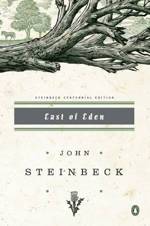

Welcome to my shelf! Take a look around, grab a cup of coffee, enjoy. Tap a spine for the review.

Currently reading
East of Eden
[ John Steinbeck ]
The depth of this book has been insane so far. Interesting seeing these biblical relations play out
with respect to Steinbeck's critque on underlying human system of good and evil.